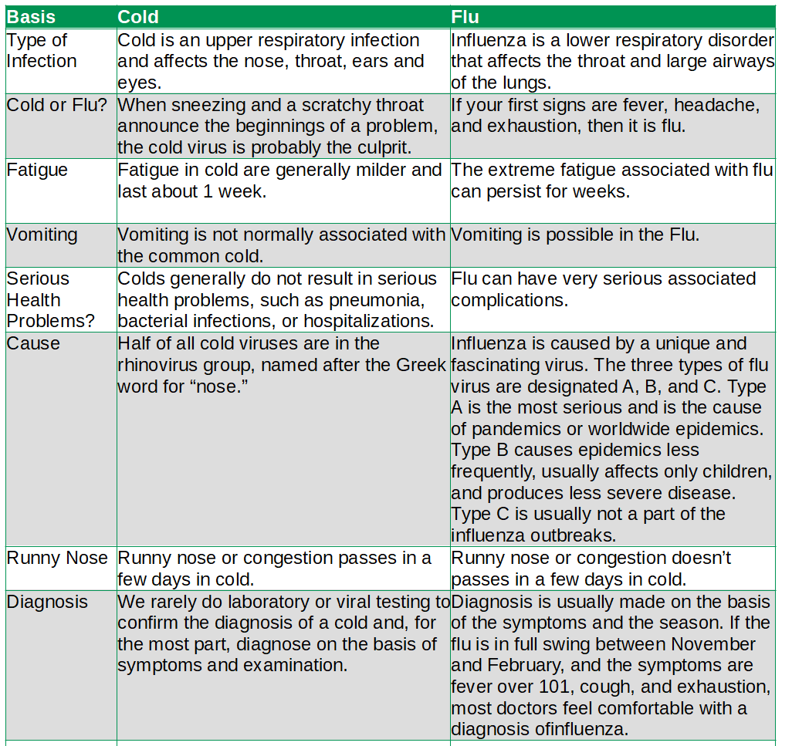

What is the main difference between Cold and Flu?
The main difference between Cold and Flu is Cold is an upper respiratory infection and affects the nose, throat, ears and eyes whereas Flu is a lower respiratory disorder that affects the throat and large airways of the lungs. When sneezing and a scratchy throat announce the beginnings of a problem, the cold virus is probably the culprit. If your first signs are fever, headache, and exhaustion, then it is flu.
Feed a cold, starve a fever
When the cold virus attacks a cell, it replicates rapidly inside, but leaves the cell intact. You develop annoying symptoms, but generally mild enough for you to continue with your daily activities. By contrast, when the flu virus replicates rapidly, thousands of new virus particles burst out, destroying the cell. In addition to the release of millions of new viruses, the dying cells spill inflammatory proteins throughout the body. The extreme cellular damage leads to a high level of cytokines, which produces the exhaustion and high fever of the flu. It’s little wonder you feel so much worse with the flu since aches, pains, and fevers are directly proportional to the amount of inflammatory compounds in the body. The cough, which is arguably the worst part of the flu, develops when the inflammatory compounds from dead and dying cells irritate the nerves in the throat and airways, triggering the cough reflex.
| Basis | Cold | Flu |
| Type of Infection | Cold is an upper respiratory infection and affects the nose, throat, ears and eyes. | Influenza is a lower respiratory disorder that affects the throat and large airways of the lungs. |
| Cold or Flu? | When sneezing and a scratchy throat announce the beginnings of a problem, the cold virus is probably the culprit. | If your first signs are fever, headache, and exhaustion, then it is flu. |
| Fatigue | Fatigue in cold are generally milder and last about 1 week. | The extreme fatigue associated with flu can persist for weeks. |
| Vomiting | Vomiting is not normally associated with the common cold. | Vomiting is possible in the Flu. |
| Serious Health Problems? | Colds generally do not result in serious health problems, such as pneumonia, bacterial infections, or hospitalizations. | Flu can have very serious associated complications. |
| Cause | Half of all cold viruses are in the rhinovirus group, named after the Greek word for “nose.” | Influenza is caused by a unique and fascinating virus. The three types of flu virus are designated A, B, and C. Type A is the most serious and is the cause of pandemics or worldwide epidemics. Type B causes epidemics less frequently, usually affects only children, and produces less severe disease. Type C is usually not a part of the influenza outbreaks. |
| Runny Nose | Runny nose or congestion passes in a few days in cold. | Runny nose or congestion doesn’t passes in a few days in cold. |
| Diagnosis | We rarely do laboratory or viral testing to confirm the diagnosis of a cold and, for the most part, diagnose on the basis of symptoms and examination. |
Diagnosis is usually made on the basis of the symptoms and the season. If the flu is in full swing between November and February, and the symptoms are fever over 101, cough, and exhaustion, most doctors feel comfortable with a diagnosis ofinfluenza. |
Why we sneeze?
Cold viruses usually get to you via you nose. They move in, take over the cells lining your nostrils,and begin reproducing. To get rid of the invaders, your body dreamed up the sneeze. When your nerves detect a virus, they contract your lungs and get them to send a blast of air through your body.
Complexity Cold vs Flu
A sign that a cold has taken a bad turn would be that the cold seems to be getting better after a few days, then seems to be getting worse. You develop a higher fever, the cough gets worse, and you genuinely feel sicker. This is definitely a signal to call your physician.
Acute bronchitis is noted in at least 60 percent of people with influenza. Pneumonia is one of the most serious complications of influenza. In some cases, the influenza virus directly infects the airways.
Diagnosis Cold vs Flu
We rarely do laboratory or viral testing to confirm the diagnosis of a cold and, for the most part, diagnose on the basis of symptoms and examination.
Diagnosis is usually made on the basis of the symptoms and the season. If the flu is in full swing between November and February, and the symptoms are fever over 101, cough, and exhaustion, most doctors feel comfortable with a diagnosis of influenza.
Cold
By the time you feel a cold “coming on,” you already have it. It can take up to two days after you are exposed to cold viruses for symptoms to develop. Colds often start off with a runny nose or a scratchy throat, then other symptoms may develop. You feel the worst after a few days and then you start feeling better until the symptoms are gone in a week or two. Bad colds are sometimes called “the flu,” but the real flu is caused by a different group of viruses.
HOME REMEDIES FOR COLDS
■ Rest. Your body needs to heal.
■ Sip warm liquids
■ Put Hot Packs on Your Sinuses
■ Drink Up!
■ Gargle With Warm Salt Water
■ Use Mentholated Salve
■ Use Saline Spray or Salt-Water Rinse
Flu
When people are hit with the flu, they usually know it. Flu symptoms tend to come on suddenly, and can really wipe a person out in no time at all. Symptoms develop between one and four days after the person has been exposed to the flu virus. That means that people can spread the disease before they even know they have it.
For most people, the flu is not a dangerous illness. The symptoms can make you feel really bad—probably worse than any cold you’ve had. But eventually you will get better. For some people, though, the flu can become very serious, especially for babies, pregnant women, the elderly, and people with long-term health problems such as asthma, diabetes, or heart disease. People whose body defenses have been weakened by the flu may also develop other diseases, such as pneumonia.